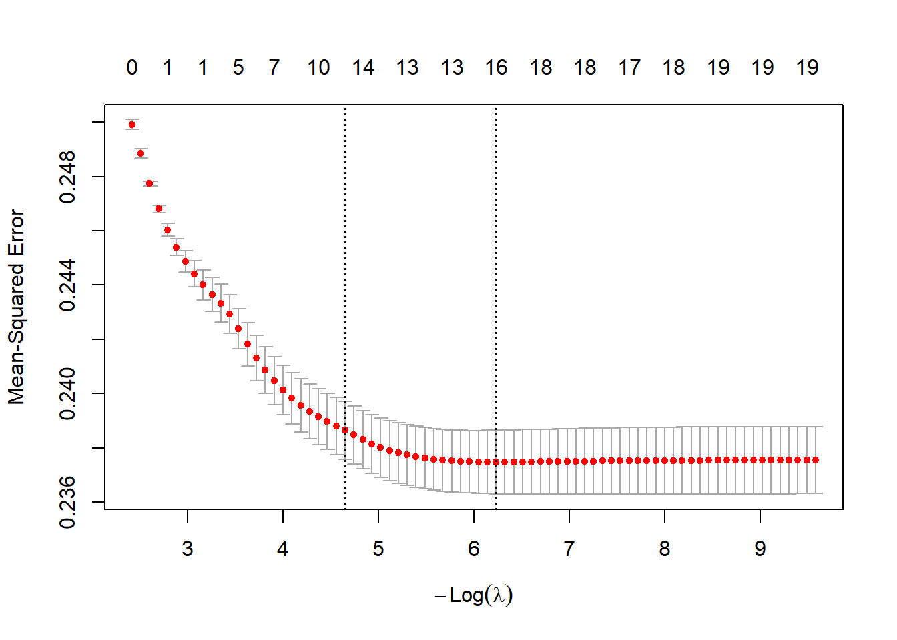

Selles peatükis käsitleme LASSO-regressioonimudelit ja kantregressiooni (ridge), mis kuuluvad regulariseeritud regressioonimeetodite hulka. Need meetodid on kasulikud olukordades, kus meil on palju selgitavaid tunnuseid, sh nende polünoomid ja interaktsioonid, selgitavate tunnuste vahel on tugev multikollineaarsus ning me soovime automatiseerida mudelisse kaasatavate tunnuste valikut. Sellistes tingimustes ei tööta klassikaline vähimruutude meetod (OLS) hästi, eriti kui parameetrite arv on lähedane vaatluste arvule koguni suurem.
Lisaks prognoosimisele pakuvad LASSO ja ridge vahendeid põhjuslike mõjude hindamiseks keerukates olukordades, kus:
on palju potentsiaalseid kontrollmuutujaid,
eeldame tingimuslikku sõltumatust (CIA),
Eraldi käsitleme kolme lähenemist:
jääkliikmete meetodit (partialling out),
topeltvaliku meetodit (double selection),
instrumentmuutuja meetodit koos LASSO-põhise tunnuste valikuga.
11.2 Regulaaritud regressioon: üldine raamistik
Lineaarne mudel ja OLS
Lähtume klassikalisest lineaarsest mudelist:
\[
Y_i = X_i'\beta + \varepsilon_i,\quad i = 1,\dots,n,
\]
kus \(Y_i\) on sõltuv muutuja, \(X_i\) pikkusega \(p\) selgitavate tunnuste vektor, \(\beta\) tundmatu parameetrite vektor ja \(\varepsilon_i\) vealiige. Vektorkujul võime kirjutada:
\[
Y = X\beta + \varepsilon,
\]
kus \(Y \in \mathbb{R}^n\), \(X \in \mathbb{R}^{n \times p}\), \(\beta \in \mathbb{R}^p\) ja \(\varepsilon \in \mathbb{R}^n\).
kus \(P(\beta)\) on karistusfunktsioon ja \(\lambda \ge 0\) regulaarimisparameeter, mis kontrollib karistuse tugevust.
Kui \(\lambda = 0\), langeb mudel kokku OLS-iga.
Kui \(\lambda\) kasvab, suureneb parameetrite kahanemine nulli suunas ja mudeli keerukus väheneb.
Eduka regulaarimise eelduseks on tavaliselt, et tunnused \(X\) standardiseeritakse (nullkeskmine ja ühikvariatsioon), et karistus erinevate tunnuste vahel oleks võrreldav.
12 Kantregressioon (ridge)
12.1 Mudeli definitsioon
Kantregressioon (ridge-regressioon) kasutab L2-karistust:
väikese \(\lambda\) korral on nihe väike, kuid dispersioon suur,
suure \(\lambda\) korral suureneb nihe, kuid dispersioon väheneb.
Prognoosimisel valitakse \(\lambda\) tavaliselt ristvalideerimisega (K-kordne CV):
jaga andmed \(K\) osaks;
iga kandidaadi \(\lambda\) korral hinda mudel \(K-1\) osal andmetest;
arvuta keskmine ruutprognoosiviga järelejäänud osal;
vali \(\lambda\), mis minimeerib prognoosivea.
12.3 Millal kasutada ridge’i
Kantregressiooni kasutatakse eelkõige siis, kui:
selgitavaid tunnuseid on palju (sh polünoomid, interaktsioonid),
esineb tugev multikollineaarsus,
eesmärk on hea prognoos, mitte üksikute koefitsientide selge interpreteerimine,
parameetrite arv on lähedane vaatluste arvule.
Põhjusliku mõju hindamise juures kasutatakse ridge’i tavaliselt osana laiendatud meetoditest (nt Augmented Synthetic Control, double machine learning) – harvem iseseisva „mõju hinnanguna“.
13 LASSO regressioon
13.1 Mudeli definitsioon
LASSO (Least Absolute Shrinkage and Selection Operator) kasutab L1-karistust:
Elastic net on kasulik, kui tunnused on tugevalt korreleeritud: puhas LASSO kaldub valima ühe tunnuse grupist ja teised välja jätma, elastic net võimaldab „grupivalikut“.
13.3 Post-LASSO
LASSO koefitsiendid on nihkega nulli suunas, kui \(\lambda > 0\). See on prognoosimisel aktsepteeritav, kuid mõju interpreteerimisel võib nihe häirida. Post-LASSO lähenemine:
hinda LASSO mudel ja vali aktiivsete tunnuste hulk \[
\hat{S} = \{j: \hat{\beta}_j^{\text{LASSO}} \neq 0\};
\]
hinda OLS-ga mudel, mis sisaldab ainult tunnuseid \(X_{\hat{S}}\): \[
Y_i = X_{i,\hat{S}}'\beta_{\hat{S}} + u_i.
\]
Nii saadud OLS-kordajaid nimetatakse Post-LASSO hinnanguteks. Need on endiselt mõjutatud tunnuste valiku ebastabiilsusest, kuid vähem nihkes kui LASSO koefitsiendid ise.
14 Tavaline LASSO versus teooriapõhine LASSO
14.1 Tavaline LASSO (glmnet, CV-põhine)
Tüüpiline LASSO rakendus prognoosimisel (nt pakett glmnet) kasutab ristvalideerimist:
\(\lambda\) valitakse, et minimeerida prognoosiviga (MSE) ristvalideerimisel;
kõik tunnused koheldakse karistamisel ühtviisi;
eesmärk: võimalikult hea prognoos.
See on sobiv, kui:
huvi pakub eeskätt prognoositäpsus,
ei ole vaja täpseid usalduspiire mõjuhinnangutele,
Teooriapõhine LASSO (nt R-pakett hdm, funktsioon rlasso) valib \(\lambda\) teoreetiliste piiride alusel, lähtudes:
vaatluste arvust \(n\),
tunnuste arvust \(p\),
vealiikme dispersiooni hinnangust,
võimalusest, et olemas on heteroskedastilisus.
Eesmärk:
usaldusväärne järeldus põhjusliku seose kohta,
korrektsed usaldusvahemikud ja testid.
Omadused:
\(\lambda\) on tavaliselt suurem kui ristvalideerimisel, mudel konservatiivsem;
valib vähem tunnuseid (harvem üle-sobitamine);
standardvigade hinnangud on kohandatud heteroskedastilisuse suhtes.
Teooriapõhine LASSO sobib kõige paremini mõju hindamise kontekstis, kus peamine on parameetri usaldusväärne järeldus, mitte pelgalt hea prognoos.
15 Prognoosimine versus mõju hindamine
Prognoosimisel on mudeli kvaliteedi peamine kriteerium väike prognoosiviga (nt MSE testandmetel). Mõju hindamisel on oluline:
väike nihe huvipakkuva parameetri (nt ravi mõju) hinnangul,
korrektselt hinnatud standardvead ja usaldusvahemikud,
robustsus tunnuste valiku vigade ja üle-sobitamise suhtes.
Ristvalideeritud LASSO võib valida liiga väikese \(\lambda\):
prognoos võib olla küll väga täpne,
kuid mõju hinnang võib olla nihkes ja usaldusvahemikud liiga kitsad.
Seetõttu kasutatakse mõju hindamisel teooriapõhist LASSOt ja spetsiaalseid konstruktsioone (jääkide meetod, topeltvalik, LASSOga IV), mis on teoreetiliselt õigustatud „sparse high-dimensional“ tingimustes.
16 Jääkliikmete meetod (partialling out)
16.1 FWL-teoreem ja residuaalne regressioon
Võtame mudeli, kus huvi pakub ravi mõju:
\[
Y_i = \alpha D_i + X_i'\beta + u_i,
\]
kus \(D_i\) on ravi (näiteks koolitus, ravimeede, poliitikameede) ja \(X_i\) kontrolltunnuste vektor. Frisch–Waugh–Lovelli (FWL) teoreem ütleb, et OLS-hinnang \(\hat{\alpha}\), mis saadakse ühisest regressioonist \(Y\) peal \(D\) ja \(X\), võrdub järgmise kolmesammulise protseduuri tulemusena saadud hinnanguga:
See tähendab, et oleme „partialiseerinud välja“ \(X\)-de mõju nii tulemuselt kui ravilt ja hindame seejärel seost nende jääkide vahel.
16.2 Tingimusliku sõltumatuse eeldus
Mõju hindamisel eeldame sageli:
\[
(Y_i(0), Y_i(1)) \perp D_i \mid X_i
\]
(CIA – conditional independence assumption). Kui see eeldus kehtib ja \(X_i\) vektor on piisavalt rikas, siis on ravi keskmine mõju identifitseeritud mudelis
\[
Y_i = \alpha D_i + X_i'\beta + u_i.
\]
Kui aga \(X\)-e on palju, ei sobi lihtne OLS kontrollimiseks. Jääkide meetod LASSOga asendab OLS-põhise regressiooni \(Y\) ja \(D\) peal prognoosimismudelitega, mis on hinnatud LASSO abil.
16.3 Jääkide meetod LASSOga: sammud
Eeldame, et meil on:
\(Y\) – tulemusmuutuja,
\(D\) – ravi muutuja,
\(X\) – suur hulk kandidaattunnuseid (võib olla \(p > n\)).
(X) – suur hulk kandidaattunnuseid (võib olla (p > n)).
Jääkide meetodi LASSOga idee on kasutada LASSOt selleks, et „välja võtta” (X)-de mõju nii (Y)-lt kui (D)-lt ja seejärel hinnata ravi mõju nende jääkide vahelise regressiooniga. See põhineb Frisch–Waugh–Lovelli teoreemil, mille kohaselt saab huvipakkuva ravi koefitsiendi () leida regressioonist jääkide peal.
1. samm – (Y) prognoosimine (X)-dega
Kõigepealt prognoosime tulemusmuutujat (Y) kontrolltunnuste (X) abil LASSOga:
Kui (D) on binaarne (nt osales koolitusel vs ei osalenud), kasutab LASSO siin lineaarset tõenäosusmudelit; vajadusel saab kasutada ka logit/probit-mudeleid, kuid klassikalises hdm-raamistikus lähtutakse lineaarse regressiooni loogikast.
\[ \tilde{Y}\_i = \alpha \tilde{D}\_i + \eta\_i.\] OLS-hinnang () on siin LASSO-põhise partialling out -meetodi hinnang ravi keskmisele mõjule (CATE või ATE sõltuvalt seadetest ja laiendustest).
R-is:
Paketis hdm saab kogu protseduuri teha ühe käsuga:
Siin:
method = "partialling out" ütleb, et kasutatakse jääkide meetodit;
post = TRUE tähendab, et lõplik regressioon tehakse Post-LASSO-na (tunnuste valiku järel OLS).
Jääkide meetodi puhul on võtme-eeldus, et prognoosid (_Y(X_i)) ja (_D(X_i)) on piisavalt täpsed, ning et CIA (tingimuslik sõltumatus) kehtib: pärast (X)-de arvessevõttu ei ole ravi (D) korreleeritud potentsiaalsete tulemustega.
16.5 Topeltvaliku meetod (double selection)
Motivatsioon
Jääkide meetod eeldab kaudselt, et samad kontrollmuutujad (X) on olulised nii (Y) kui (D) jaoks, ning et LASSO valib need piisavalt hästi välja prognoosimissammudes. Praktikas võib juhtuda, et:
mõni tunnus mõjutab tugevalt ravi (D), kuid mõjutab (Y)-d vaid nõrgalt;
LASSO võib selle tunnuse välja jätta, kui prognoosime (Y)-d;
see võib omakorda tekitada nihet ravi mõju hinnangus, sest oluline konfundeeriv tunnus puudub.
Topeltvaliku meetod vähendab seda ohtu, kasutades LASSOt nii (Y)- kui (D)-võrrandi jaoks ja kombineerides tulemused.
kaasab mudelisse nii tunnused, mis on olulised (Y) jaoks, kui need, mis on olulised (D) jaoks;
on robustsem ohu suhtes, et mõni oluline tunnus jääb ühe LASSO-sammu käigus välja;
tavaliselt toob mudelisse rohkem kontrollmuutujaid kui puhas partialling out;
standardvead võivad pisut suureneda (rohkem kontrolle), kuid nihe väheneb.
Intuitsioon: kui mingi (X_j) on oluline ravi (D) jaoks (vältimaks omistatavat seost (D)-le, mis tegelikult tuleneb (X_j)-st), siis jõuab see mudelisse vähemalt ravi-võrrandi kaudu, isegi kui (Y)-võrrandi LASSO teda ei valinud.
16.6 Instrumentmuutuja meetod LASSOga
Endogeensus ja IV-raamistik
Kui ravi (D) on endogeenne, st (\[u_i \mid D_i\] ), siis ei ole lihtne kontrollmuutujate lisamine piisav. Kasutame instrumentmuutujat (Z), mis:
on korreleeritud ravi (D)-ga (relevantsus),
ei ole korreleeritud vealiikmega (u) (eksogeensus).
ühte osa kasutatakse prognoosimismudelite hindamiseks,
teist osa mõju hindamiseks,
seejärel keskmistatakse tulemused osade vahel.
See vähendab nihet, mis tekib, kui sama paindlik mudel kasutatakse korraga nii seose kui mõju hindamiseks.
LASSO sobitub DML-raamistikku kui üks võimalik „nuisance“-mudelite (st (_Y, _D)) estimatsiooni meetod, mis on kiirem ja paremini mõistetav kui keerukamad musta kasti masinõppemudelid, kuid juba võimaldab kõrgedimensioonilist käsitlust.
16.8 Praktilised soovitused LASSO kasutamiseks mõju hindamisel
Kokkuvõtlikud juhised:
Kui eesmärk on prognoos:
kasuta ristvalideeritud LASSOt (näiteks glmnet),
vali () CV alusel,
interpreteeri mudeleid pigem „must kast“ lähenemisena.
Kui eesmärk on põhjuslik mõju:
ära toetu ainult CV-LASSOle,
kasuta teooriapõhist LASSOt (nt hdm::rlasso),
kasuta kas:
jääkliikmete meetodit (partialling out),
topeltvalikut (double selection),
või nende IV-varianti (rlassoIV).
Jääkide meetod:
efektiivsem, kui prognoosimismudelid (_Y) ja (_D) on täpsed;
sobib hästi, kui tõesti usud, et LASSO leiab õiged seosed.
Topeltvalik:
robustsem, kui seosed on nõrgad ja tunnuseid palju;
kaasab mudelisse kõik (X)-d, mis on olulised kas (Y) või (D) jaoks;
väldib olulise konfundeeriva tunnuse väljajätmist.
IV-kontextis:
kasuta LASSOt kontrollide ja instrumentide komponentide valikuks,
jäta peamised instrumendid karistamata (select.Z = FALSE),
kontrolli instrumentide tugevust ja tõlgenda tulemusi teoreetilise raamistikuga kooskõlas.
16.9 Kokkuvõte
Jääkliikmete meetod, topeltvalik ja LASSOga instrumentmuutuja meetod seovad masinõppe ja klassikalise ökonomeetria, et võimaldada usaldusväärset mõju hindamist kõrgedimensioonilistes seadetes. LASSO mängib seejuures kaht rolli:
prognoosijana, mis aitab modelleerida keerulisi seoseid (Y) ja (D) ning instrumentide ja kontrollide vahel;
tunnuste valijana, mis vähendab mudeli mõõtmeid ja aitab vältida üle-sobitamist.
Korrektse regulaarimisparameetri valiku (teooriapõhine ()) ning sobiva järeldusmetoodika (partialling out, double selection, IV) korral saame LASSO abil hinnata poliitikate ja sekkumiste põhjuslikke mõjusid ka olukorras, kus traditsioonilised ökonomeetrilised meetodid jäävad suurte tunnustehulkade ja multikollineaarsuse tõttu hätta.
16.10 Näide
17 Vajalikud paketid
# load packagesrequire(dplyr) # used for data manipulation and joining
Loading required package: dplyr
Attaching package: 'dplyr'
The following objects are masked from 'package:stats':
filter, lag
The following objects are masked from 'package:base':
intersect, setdiff, setequal, union
require(glmnet) #glmnet, LASSO
Loading required package: glmnet
Loading required package: Matrix
Loaded glmnet 4.1-10
require(hdm) # LASSO
Loading required package: hdm
18 LASSO ja mõju hindamine
18.1 Lihtne näide LASSOga prognoosimisel
Kasutame sama andmestikku
load(url("http://kodu.ut.ee/~avork/files/oppetoo/micro/atp.RData"))#vali siit mida tahadatp$y= atp$employed12#Nimetame meetmes osalemise ümber d-ks, lühematp$d= atp$trainingatp2 <- atp %>%select(-training, -starts_with("wage"), -starts_with("employed")) #Kõik, mis algavad wage või employed, jätame välja#Muudame ka järjestustatp2 <- atp2 %>%select(y, d, everything())
Teeme andmemaatriksid
#define response variabley <- atp2$y#define matrix of predictor variables# - 1 no interceptxw <-model.matrix(~ d + year + age + gender + collar + immigrant + rural + region + educ + lastemp + benefit -1, data = atp2)#head(xw)#drop year2006#xw <- xw[, colnames(xw) != "year2006", drop = FALSE]dim(xw)
[1] 7140 19
#18 selgitavat muutujat
glmnet() funktsioon sobitab lasso regressioonimudeli, kui määrata alpha = 1.
Tee k-kordne ristvalideerimine, et leida optimaalne lambda väärtus. Olgu k = 5
cv_model <-cv.glmnet(xw, y, alpha =1, nfolds =5)cv_model
Call: cv.glmnet(x = xw, y = y, nfolds = 5, alpha = 1)
Measure: Mean-Squared Error
Lambda Index Measure SE Nonzero
min 0.001963 42 0.2375 0.001170 16
1se 0.009543 25 0.2387 0.001072 12
#min - näitab minimaalse MSE väärtusega
Leia optimaalne lambda väärtus, mis minimeerib testandmete ruutkeskmise vea (MSE).
best_lambda <- cv_model$lambda.minbest_lambda
[1] 0.001962509
Teeme joonise lambda väärtuse ja testandmestiku MSE vahel
plot(cv_model)

Parim mudel
best_model <-glmnet(xw, y, alpha =1, lambda = best_lambda)
lasso.reg =rlasso(y ~ xw, post =FALSE) # use lasso, not-Post-lassosum.lasso <-summary(lasso.reg, all =FALSE)
Call:
rlasso.formula(formula = y ~ xw, post = FALSE)
Post-Lasso Estimation: FALSE
Total number of variables: 19
Number of selected variables: 12
Residuals:
Min 1Q Median 3Q Max
-0.6797 -0.4524 -0.3246 0.4742 0.7154
Estimate
(Intercept) 0.408
d 0.025
age5064 -0.057
gendermale -0.013
collarwhite 0.002
immigrant1 -0.055
rural -0.014
regionGotham 0.037
educSecondary 0.001
educTertiary 0.045
lastemp2_4 0.018
lastempover4 0.003
benefit 0.145
Residual standard error: 0.4876
Multiple R-squared: 0.04909
Adjusted R-squared: 0.04749
Joint significance test:
the sup score statistic for joint significance test is 3.753 with a p-value of 0
# partial fit via ols#väljundmudelyjax =lm(fmla.y, data = atp3)summary(mudelyjax)
Call:
lm(formula = fmla.y, data = atp3)
Residuals:
Min 1Q Median 3Q Max
-0.7278 -0.4589 -0.2356 0.4748 0.7899
Coefficients: (1 not defined because of singularities)
Estimate Std. Error t value Pr(>|t|)
(Intercept) 0.339102 0.031079 10.911 < 2e-16 ***
year2006 0.005563 0.011625 0.478 0.63232
year2007 NA NA NA NA
age3049 -0.015162 0.014267 -1.063 0.28794
age5064 -0.108447 0.018214 -5.954 2.74e-09 ***
gendermale -0.020094 0.011883 -1.691 0.09089 .
collarwhite -0.008197 0.013783 -0.595 0.55208
immigrant1 -0.077598 0.018132 -4.280 1.90e-05 ***
rural -0.033885 0.014916 -2.272 0.02313 *
regionBludhaven 0.033445 0.031143 1.074 0.28289
regionCentral 0.009097 0.027172 0.335 0.73780
regionGotham 0.061740 0.024818 2.488 0.01288 *
regionMetropolis 0.029592 0.029524 1.002 0.31623
educSecondary 0.068455 0.017101 4.003 6.32e-05 ***
educTertiary 0.108364 0.018311 5.918 3.41e-09 ***
lastemp1_2 0.047588 0.019021 2.502 0.01238 *
lastemp2_4 0.067030 0.017143 3.910 9.31e-05 ***
lastempover4 0.050303 0.015706 3.203 0.00137 **
benefit 0.154204 0.012560 12.277 < 2e-16 ***
---
Signif. codes: 0 '***' 0.001 '**' 0.01 '*' 0.05 '.' 0.1 ' ' 1
Residual standard error: 0.4868 on 7122 degrees of freedom
Multiple R-squared: 0.05445, Adjusted R-squared: 0.05219
F-statistic: 24.12 on 17 and 7122 DF, p-value: < 2.2e-16
rY = mudelyjax$res#Sama meetmes osalemisega#Teeme otserD =lm(fmla.d, data = atp3)$res#Ja nüüd seos jääkliimete vahelpartial.fit.ls =lm(rY ~ rD)summary(partial.fit.ls)$coef["rD", 1:2]
Estimate Std. Error
0.04299741 0.01344309
#Täpselt sama, mis oli (!)summary(full.fit)$coef["d", 1:2]
Estimate Std. Error
0.04299741 0.01345912
Aga nüüd teeme selle LASSOga
Post-LASSO
# partial fit via post-lassorY =rlasso(fmla.y, data = atp3)$resrD =rlasso(fmla.d, data = atp3)$respartial.fit.postlasso =lm(rY ~ rD)summary(partial.fit.postlasso)$coef["rD", 1:2]
Estimate Std. Error
0.04568989 0.01344290
Mõju hinnang sarnane
Funktsioon rlassoEffect teeb selle kõik ise!
#We have Xs, Y, D as parametersEff =rlassoEffects(xw, y, index =c(1), method ="partialling out") #indeks 1 ütleb, et meede on esimeses veerussummary(Eff)$coef[, 1:2]
Estimate. Std. Error
0.04568989 0.01344290
Topelt selektsiooni meetod (double selection method)
Vali Lasso abil kontrollmuutujad x_{ij}, mis ennustavad y_i.
Vali Lasso abil kontrollmuutujad x_{ij}, mis ennustavad d_i.
Teosta tavaruutude meetod (OLS), kus y_i regresseeritakse d_i ja kontrollmuutujate ühisosa (!) suhtes, mis valiti sammudes 1 ja 2.
Eff =rlassoEffects(xw, y, index =c(1), method ="double selection") summary(Eff)$coef[, 1:2]